|
|
In the game, you can hear some music playing in some screens. In the map, there are one music for each land.
Those musics are old MOD music that has long lost the reference (unfortunately).
They are due to several really good artists that use to play with MOD music in the late 80's.
However, in each stage (about 4 per level) you hear a different small music in the background.
Those musics are actually generated by recursively applications of simple math formulas! Thats right, they are Math Music!
They were generated by the Wolfran Tones online tool.
Bellow is the graphical representation (as well as the numerical one) for each music you hear in the game.
The process of creating each music is simple and consists in choosing the random seed to apply to a recursive (see faq in Wolfran website) equation that generates a diagram called cellular automata.
The diagram is the colored dots you see in the graphs bellow.
After that you just assign one or more instrument to each point in the graph and let it play! Surprisingly, the generated musics are pretty much like any composed music we hear out there! And because they are generated by some Math equation, they are here in 'can u control'. So, there is some new fact about the game you can share with your friends! You are playing in a game where most of the music is generated by nature itself!! dance | 31.1092956363.97210
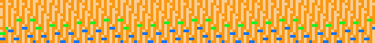
classical | 31.1010503302.67100 | flute, harp
dance | 31.3271710099.234226
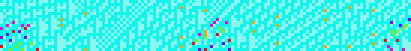
country | 31.1921656243.39075
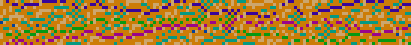
country | 31.174679105.8836
dance | 31.3563651918.52086
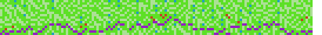
rock/pop | 31.446873723.46181
dance | 31.2239006980.109104
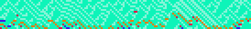
r&b | 31.117679372.149087
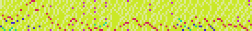
country | 31.2506624657.41886
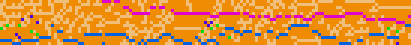
world | 31.362099108.79296
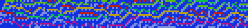
dance | 31.2308248600.21229
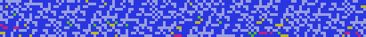
country | 31.1572538726.30583
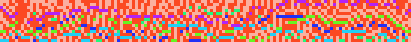
latin | 31.2338735898.10135
hip hop | 31.3629220154.652
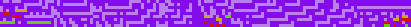
dance | 31.1084957014.6316
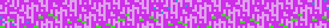
classical | 31.1262114052.273273 | harpsichord, strings
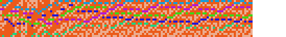
You can try the musics (and a lot more) in the Wolfran web page. Just past the numbers you see in each music above and you will be able to reproduce the music exactly!
have Fun!!! |